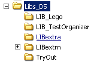

DATA_ACTUEEL (gebruik ik om programma's waaraan gewerkt wordt op te slaan)Voor programma's die bestaan uit meerdere executables, wordt een aparte directory aangemaakt, waarin alle executables + dll's worden opgeborgen. Vanuit deze directory kan het programma dus ook gerund worden. Tevens wordt deze directory gebruikt om installaties te creeeren en misschien zal er daarom nog wat meer in komen.
DATA_DEFINITIEF (gebruik ik om programma's waaraan niet meer gewerkt wordt op te slaan)
... OF .... iets anders herkenbaars
DATA_TO_EXESources van programma's worden opgeborgen in een subdirectory (van data_actueel, data_definitief of hoe ze ook heten mogen), die 2 elementen bevat: de versie van de Delphi-compiler en een herkenbare naam, zoals
D5_MIDAC
D5_PACEMAKER
